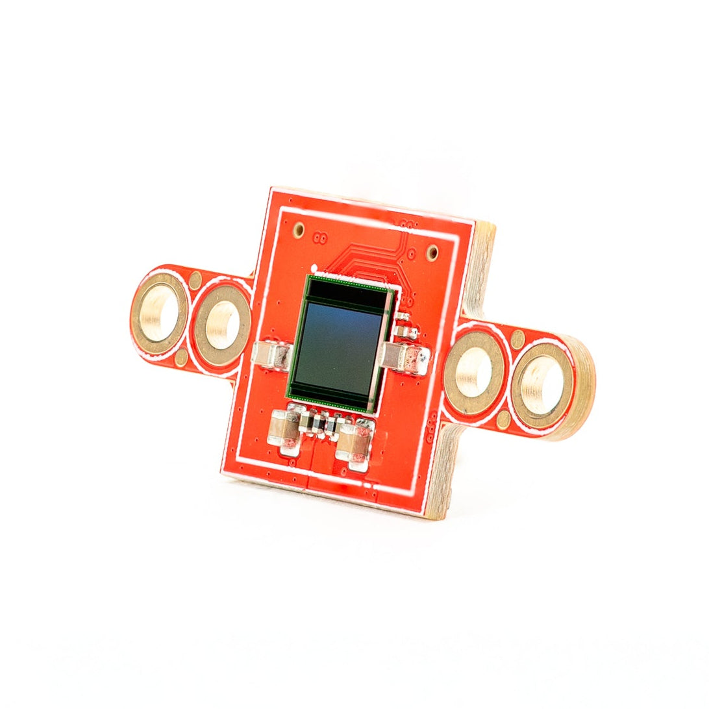
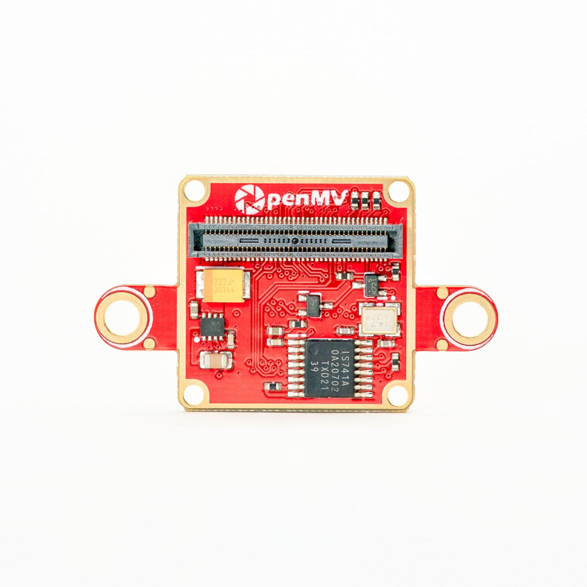

Capteurs OpenMV¶
Modules de caméra et adaptateurs de capteurs qui se branchent sur le connecteur carte à carte des OpenMV Cams compatibles. Chaque page décrit le rôle du capteur, ses caractéristiques principales et l’API MicroPython permettant de le piloter.

PS5520 Caméra HDR 5 MP
Capteur HDR 5 MP avec haute plage dynamique.
Explorer →
Thermique multispectral (PAG7936)
Couleur obturateur global 1 MP + thermique FLIR Lepton sur un seul module.
Explorer →
Thermique multispectral (OV5640)
Couleur obturateur à défilement 5 MP + thermique FLIR Lepton sur un seul module.
Explorer →
Caméra événementielle multispectrale
Capteur événementiel GENX320 + couleur PAG7936 sur un seul module.
Explorer →
Caméra événementielle GENX320
Capteur de vision événementielle Prophesee — précision temporelle à la microseconde.
Explorer →
Adaptateur FLIR Boson
Adaptateur pour les cœurs FLIR Boson / Boson+ — thermique haute résolution.
Explorer →
Adaptateur FLIR Lepton
Adaptateur pour les cœurs thermiques FLIR Lepton 1.x / 2.x / 3.x.
Explorer →
Module caméra à obturateur global
Capteur monochrome à obturateur global pour la capture de mouvements rapides.
Explorer →
Module caméra OV5640 FPC
Capteur couleur obturateur à défilement 5 MP avec autofocus.
Explorer →